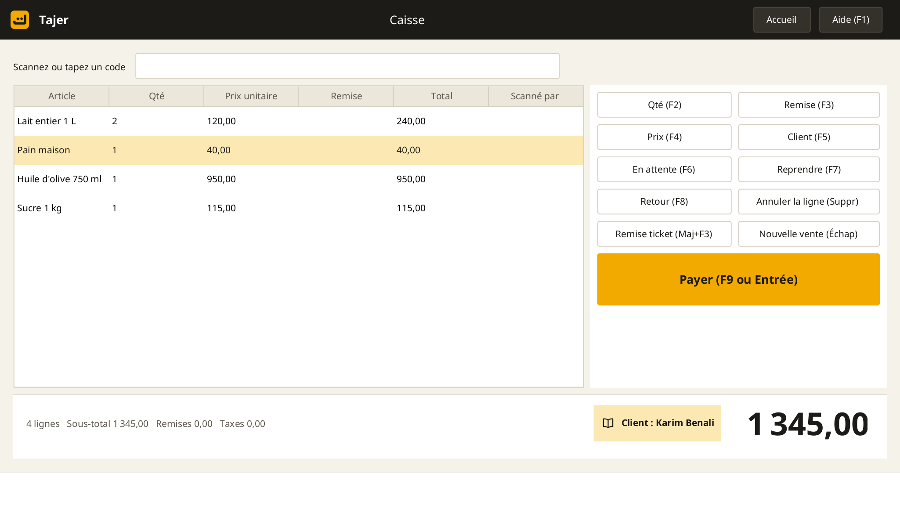
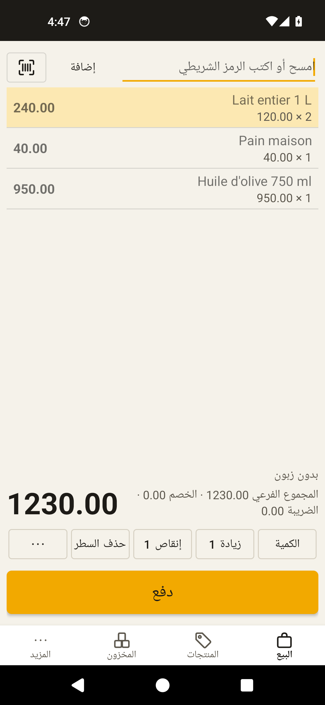

Tout votre magasin dans un seul logiciel.
Vente au code-barres, carnet de crédit, stock avec dates de péremption, achats, rapports et sauvegardes. Sur ordinateur et sur téléphone, en arabe, français, anglais, espagnol, italien et allemand.
Une journée au magasin
De l'ouverture à la clôture de caisse, Tajer vous suit à chaque étape.
Ouverture de la caisse
Comptez le fond de caisse et saisissez le montant. Le logiciel calcule le reste toute la journée.
La marchandise arrive
Recevez la livraison depuis la facture PDF ou Excel, avec quantités et dates de péremption.
Affluence en caisse
Scannez le code-barres, le prix s'affiche. Tout au clavier, le ticket sort tout de suite.
Un client achète à crédit
Choisissez le client, le montant va dans son carnet. Plafond et relevé imprimé pour chacun.
Un client rend un article
Retrouvez le ticket, choisissez l'article. Le stock et la caisse se corrigent seuls.
Clôture de la journée
Le rapport du jour en une touche : ventes, crédits, caisse. Puis une sauvegarde.
Un écran clair, sans mode d'emploi
Grands boutons, mots simples, tout au clavier.


Ce qu'il fait
- 01
Rapide en caisse
Lecteur code-barres ou caméra du téléphone, touches rapides, tout au clavier.
- 02
Carnet de crédit
Solde par client, plafond, relevé imprimé, reçu à chaque paiement. Sans intérêts.
- 03
Stock et péremption
Lots datés, vente des produits périmés bloquée, inventaire, achats fournisseurs.
- 04
Sans Internet
Vos données restent dans votre magasin. Ni cloud ni pistage. Plusieurs caisses en réseau local.
- 05
Le téléphone comme lecteur
Reliez le téléphone au PC par le Wi-Fi du magasin, ou utilisez-le comme caisse.
- 06
Documents conformes
NIF, RC, NIS et AI sur ticket et facture, clôture journalière, rapports PDF.
Vos données restent au magasin. Ni cloud ni pistage.
- 0Internet requis
- 6langues
- 58/80mm, imprimante ticket
- 5+Android sur téléphone
Télécharger v1.0.9
Choisissez votre appareil. Le fichier se télécharge directement.
dcdd96caab6d758eVersion test bureau 1.1.0-beta3 (pour essai seulement)
Installez-la pour essai après une sauvegarde de vos données.
Configuration
- PC Windows 7 ou plus récent, 2 Go de RAM, processeur double cœur.
- Imprimante ticket ESC/POS 58 ou 80 mm (optionnel).
- Lecteur code-barres USB ou caméra du téléphone (optionnel).
- Téléphone Android 5 ou plus (optionnel).
Installation
- Lancez l'installateur et gardez le dossier C:\RetailPOS (nom en lettres latines).
- Acceptez la règle du pare-feu pour relier le téléphone.
- Au premier démarrage : langue, magasin avec NIF et RC, mot de passe des sauvegardes, administrateur.
Tajer est basé sur Floreant POS (licence MRPL 1.2). Le code des parties sous licence est disponible sur demande selon l'offre de source.